Jules Oskar
DJ / PRODUCERBOULDER · BARCELONA 2027
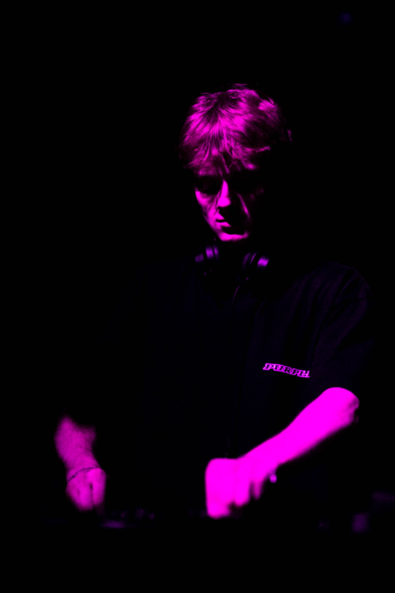
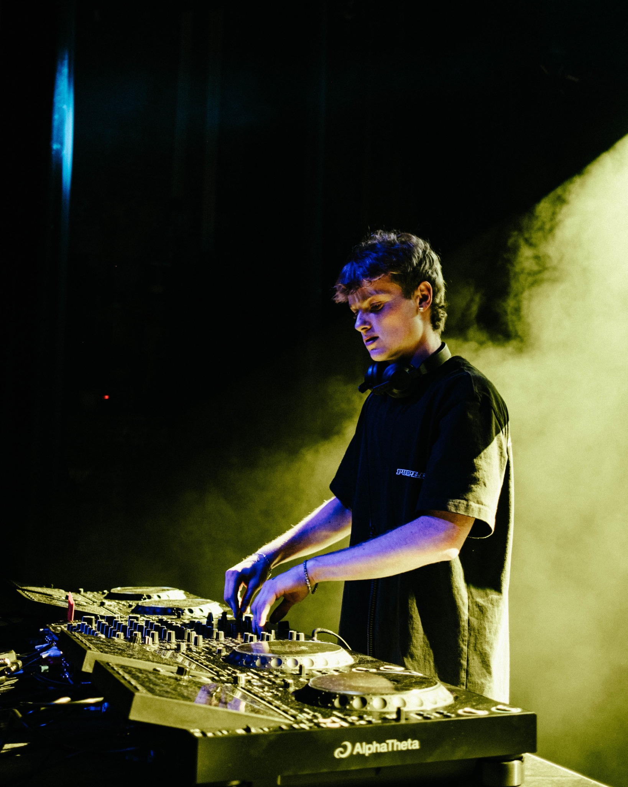
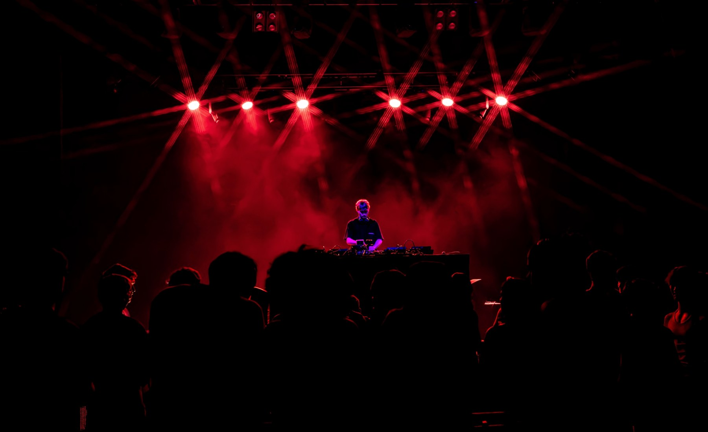
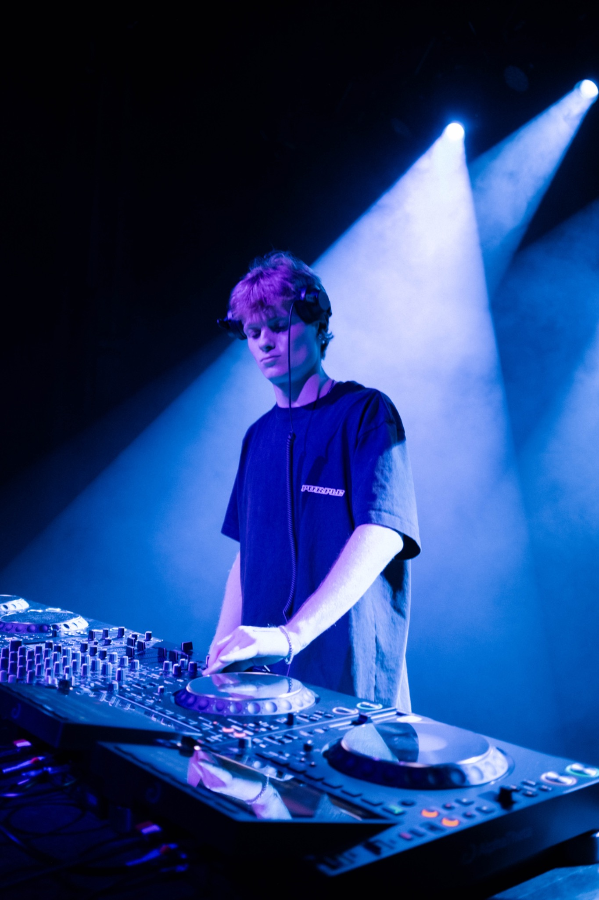
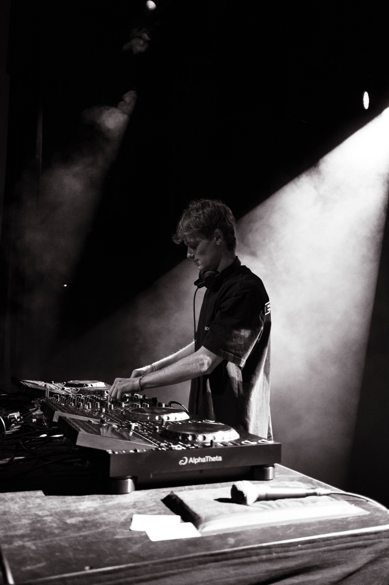
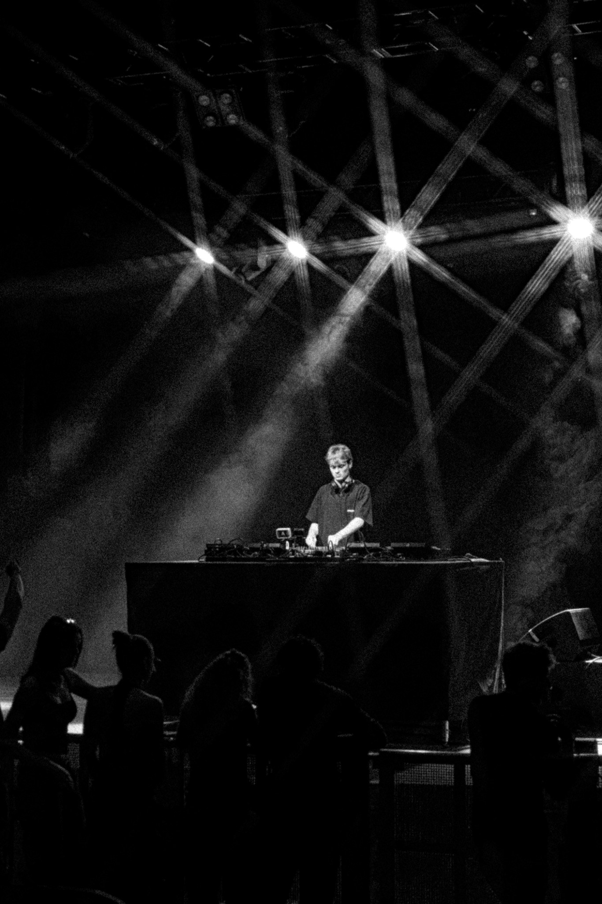
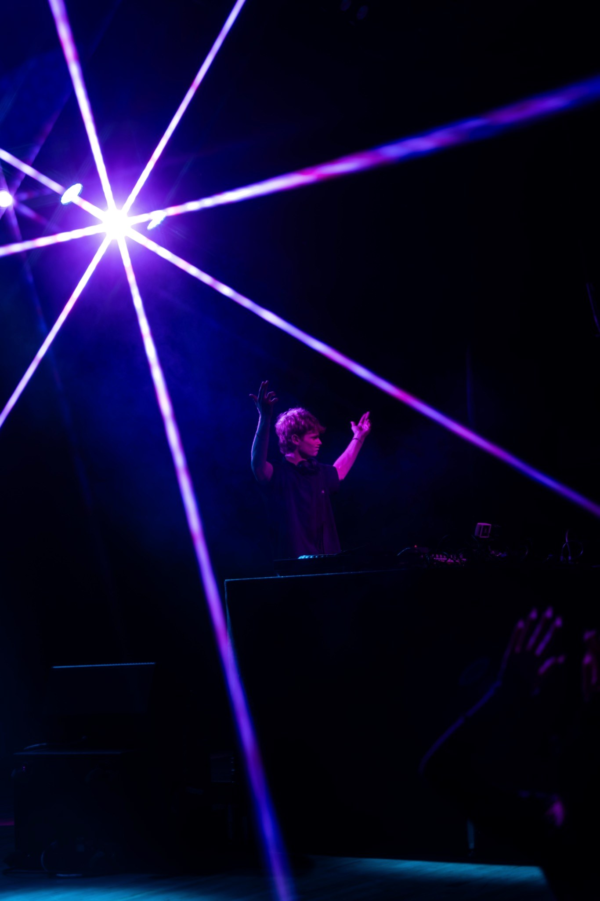
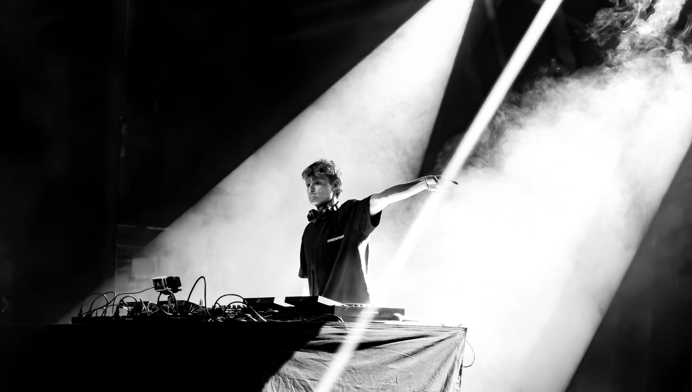
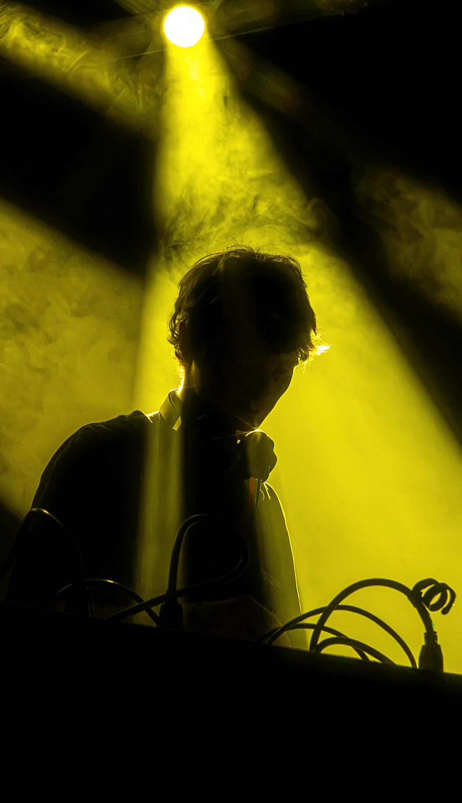
SHOWS
SEP 242026
ROSSI.BOULDER THEATER · BOULDER, CO
PLAYED
OCT 292026
CHASEWESTBOULDER THEATER · BOULDER, CO
UPCOMING

ABOUT
Brooklyn-born house DJ and producer. Based in Boulder, moving to Barcelona in January 2027.
Jules Oskar plays groove-heavy house, old-school vocals, and UK-influenced club music. After building a live following through packed Boulder parties, he opened for Rossi. at Boulder Theater and returns to support ChaseWest on October 29.
Before performing as Jules Oskar, he released Losing All Control on Broke Records under the name DUTCH.
RELEASED ONBROKE RECORDS
OPENED FORROSSI.
SUPPORTINGCHASEWEST
BASED 2027BARCELONA
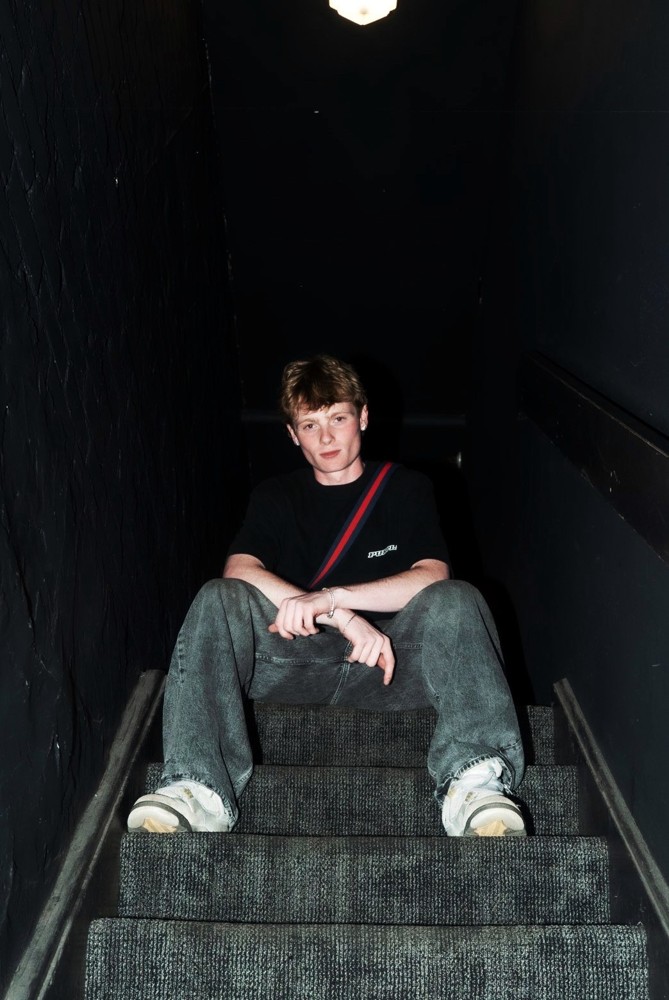
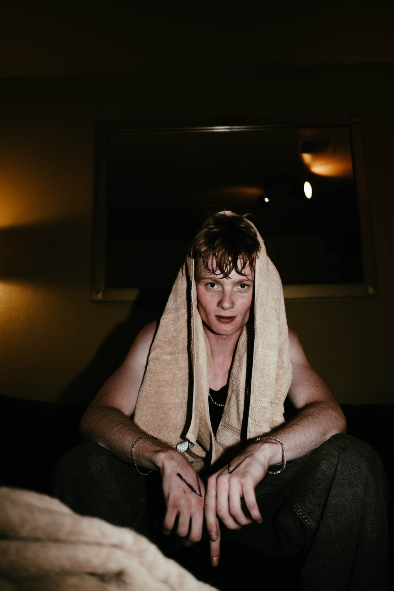
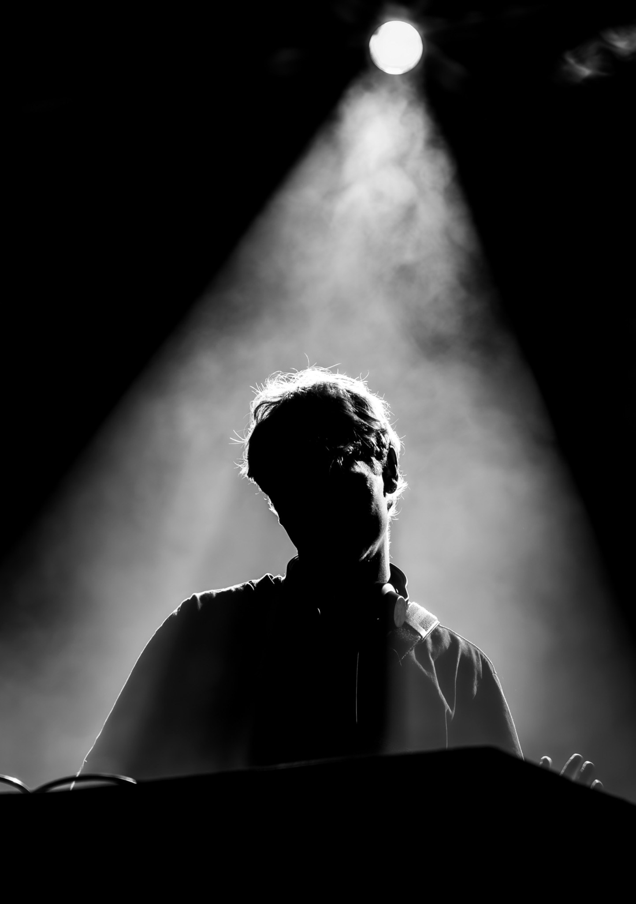
BOOKINGS
julesoskar@gmail.com
@julesoskardj
Barcelona from January 2027 · Available in Spain and across Europe